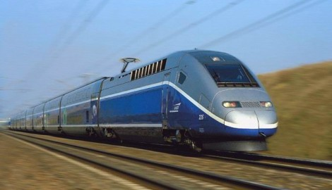

Hotel du Midi - Plan d'accés
Comment se rendre au Hôtel du Midi à Montpellier

Données GPS
43.5984849N, 3.9108937E
- Cliquez et venez jusqu'à nous !

En Train
Gare de Montpellier TGV à 300 m www.voyages-sncf.com

En Avion
Aéroport Montpellier Méditerranée à 15 minutes en voiture (10 km).
Une navette part de l’aéroport – Place de l’Europe avec un accès direct au tramway.
www.montpellier.aeroport.fr
En Voiture
Suivre Montpellier Centre, puis suivre les indications
« Gare » ou « Gambetta », puis « Parking Comédie ».
Pour garer votre véhicule, prendre le tunnel et entrer dans le parking de la Comédie.
Sur présentation de la facture émise par le Hôtel du Midi,
vous pourrez bénéficiez d’un tarif préférentiel dégressif.
www.mappy.com